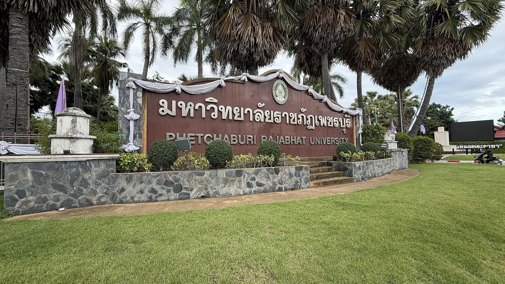
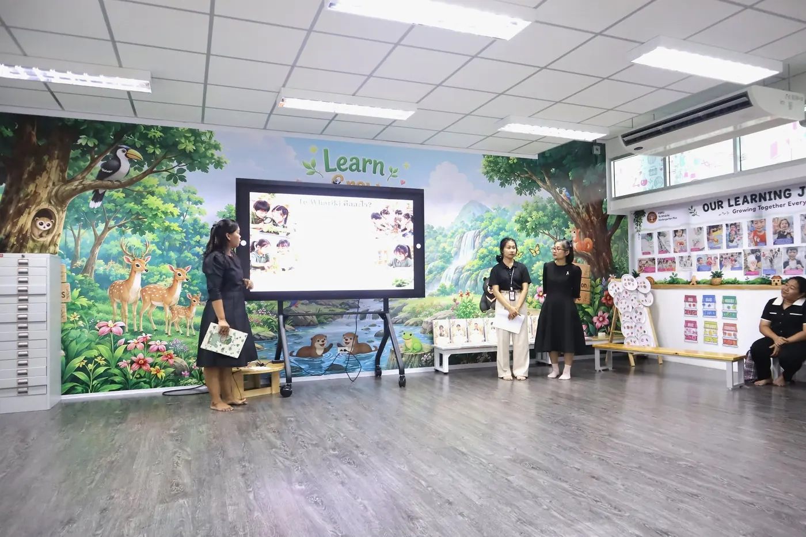
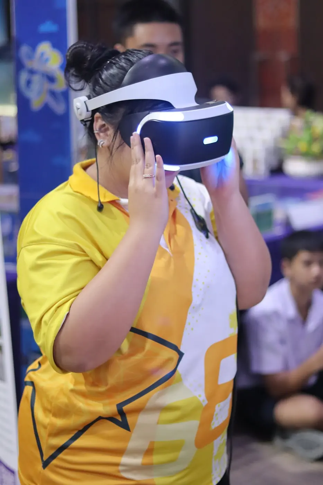
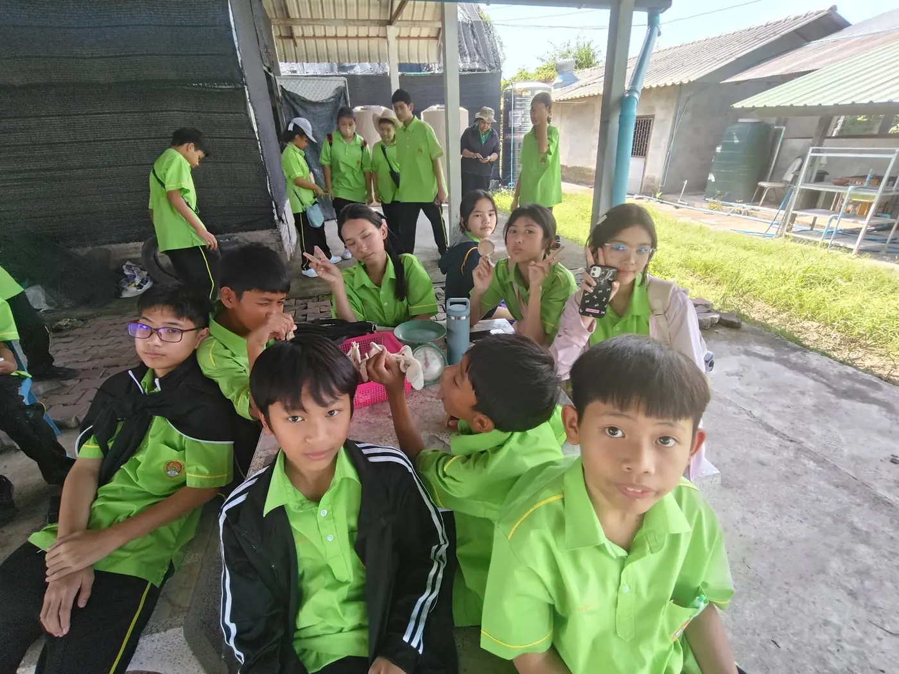
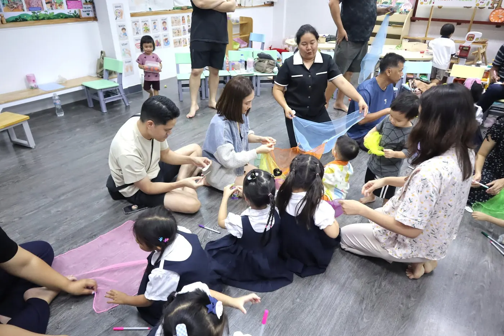

ความอยากรู้Curiosityเริ่มต้นที่นี่starts here
โรงเรียนต้นแบบในรั้วมหาวิทยาลัย ตั้งแต่อนุบาลถึงมัธยมศึกษาปีที่ 6 มุ่งเน้นความเป็นเลิศด้านวิทยาศาสตร์และคณิตศาสตร์A model school on a university campus, from kindergarten to Mathayom 6, with a focus on excellence in science and mathematics.
ภาพ:Photo: Fifa 26114, CC BY 4.0
ประกาศรับสมัคร
ปีการศึกษา 2569Admissions notice,
academic year 2026
อนุบาล – ม.6K – M.6
เรียนต่อเนื่องในโรงเรียนเดียวOne school, from the first day to graduation
พ.ศ. · ตามข้อมูลจากเพจโรงเรียนAccording to the school's page
เกิดอะไรขึ้นที่สาธิตWhat is happening at Satit

ประกาศรับสมัครนักเรียน ปีการศึกษา 2569Admissions for academic year 2026 announced

ประกวดโครงงานสิ่งประดิษฐ์และนวัตกรรมInvention and innovation project contest

ทัศนศึกษา เรียนรู้นอกห้องเรียนField trips: learning beyond the classroom
ปฏิทินกิจกรรมCalendar ตัวอย่างsample
- ธ.ค.Decประชุมผู้ปกครองภาคเรียนที่ 2Parents' meeting, term 2
- ม.ค.Janกิจกรรมวันเด็กแห่งชาติNational Children's Day
- ก.พ.Febนิทรรศการโครงงานวิทยาศาสตร์Science project fair
- มี.ค.Marสอบปลายภาคเรียนที่ 2Term 2 final exams
ที่นี่ เรียนกันอย่างไรHow learning works here
ระดับชั้นที่เปิดสอนLevels we teach

อนุบาลKindergarten
เรียนรู้ผ่านการเล่นและประสบการณ์ตรง พัฒนาครบ 4 ด้านLearning through play and real experience, growing in four areas.
ประถมศึกษาPrimary
วางพื้นฐานให้แน่น ทั้งภาษา คณิตศาสตร์ และวิทยาศาสตร์Strong foundations in language, maths and science.

มัธยมศึกษาSecondary
มุ่งเน้นความเป็นเลิศด้านวิทยาศาสตร์และคณิตศาสตร์A focus on excellence in science and mathematics.
อยากเห็นของจริง
แวะมาคุยกับเราได้See it for yourself.
Come and talk to us.
โทร 032-708623 หรืออีเมล satitpbru@mail.pbru.ac.th เพื่อนัดเยี่ยมชมCall +66 32 708 623 or email satitpbru@mail.pbru.ac.th to arrange a visit.
ที่มาของข้อมูลSources
- หน้าเกี่ยวกับโรงเรียนสาธิต (เว็บไซต์ มรภ.เพชรบุรี)About the Demonstration School (PBRU website) · ดูต้นฉบับsource
- ประกาศรับสมัครนักเรียน ปีการศึกษา 2569 (มหาวิทยาลัยราชภัฏเพชรบุรี)Admissions notice, academic year 2026 (PBRU) · ดูต้นฉบับsource
- เพจ Facebook โรงเรียนสาธิต มหาวิทยาลัยราชภัฏเพชรบุรีThe school's Facebook page · ดูต้นฉบับsource
- กิจกรรมพัฒนานักเรียน โรงเรียนสาธิต (เว็บไซต์ มรภ.เพชรบุรี)Student development activities (PBRU website) · ดูต้นฉบับsource
- หน้าติดต่อโรงเรียนสาธิต (เว็บไซต์ มรภ.เพชรบุรี)Contact page (PBRU website) · ดูต้นฉบับsource
- หลักสูตรแกนกลางการศึกษาขั้นพื้นฐาน พุทธศักราช 2551 (ฉบับปรับปรุง พ.ศ. 2560) กระทรวงศึกษาธิการBasic Education Core Curriculum B.E. 2551 (revised 2017), Ministry of Education
- ภาพป้ายมหาวิทยาลัย: Fifa 26114, CC BY 4.0, Wikimedia CommonsUniversity sign photo: Fifa 26114, CC BY 4.0, Wikimedia Commons · ดูต้นฉบับsource